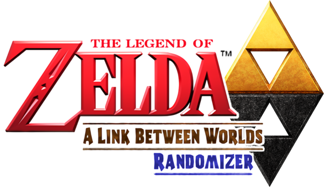
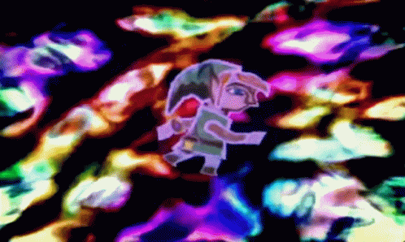

v0.4 BETA
Guides
Discord
GitHub
Theme
🗘

Generating! Please wait...
Seed Info
Seed Number
Major Settings
Normal
Hard
Glitched
Advanced Glitched
Hell
No Logic
Logic Mode
Standard
Vanilla
Master Sword Pedestal
Closed
Open
Cracks
Open From Inside Only
1 Trial Required
2 Trials Required
3 Trials Required
4 Trials Required
Open From Both Sides
Trials Door
Lorule Castle Requirement
Randomized Dungeon Prizes
Entrance Randomizer
Off
Cross World Pairs
Any World Pairs
Mirrored Cross World Pairs
Mirrored Any World Pairs
Cracksanity
Standard
Shuffled
Convenient
Hyrule
Lorule
All
Weather Vanes
Maiamai Settings
Shuffled
Vanilla
Off
Nice Items
Maiamai Limit
Maiamai Madness
Starting Inventory
Start with Merge
Start with Pouch
Bell in Shop
Sword in Shop
Boots in Shop
Assured Weapon
Misc. Settings
Off
Small Keysy
Big Keysy
All Keysy
Keysy
Treacherous Tower Floors
Super Items
Skip Big Bomb Flower
Progression Enemies
Bow of Light in Lorule Castle
Purple Potion Bottles
Exclude Minigames
Cosmetic
Chest Size Matches Contents
Night Mode
Expert Player Settings
Swordless Mode
Cross Dark Rooms without Lamp
Lamp & Net as Weapons
ROM
Original ROM